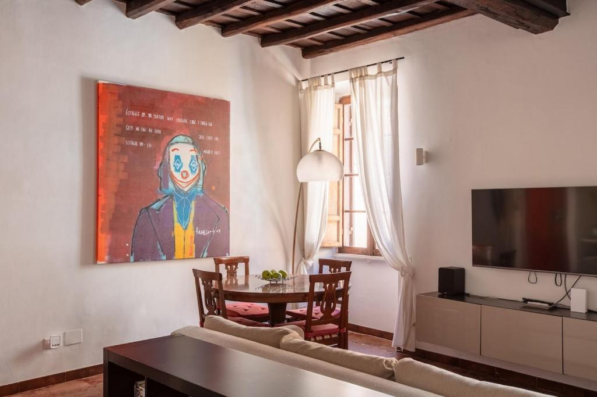

Trastevere · Roma
BQA San Crisogono Apartments Rome-Trastevere
Storico appartamento di 80 mq nel cuore di Trastevere, con cucina attrezzata e balcone privato.
Fino a 4 ospiti
Balcone privato
Disponibilità
Date libere in tempo reale sul nostro annuncio ufficiale.